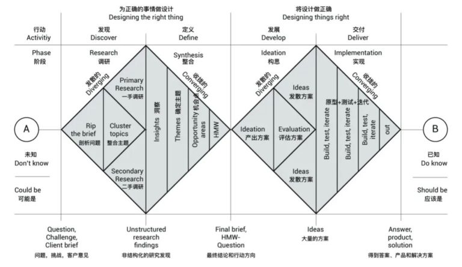
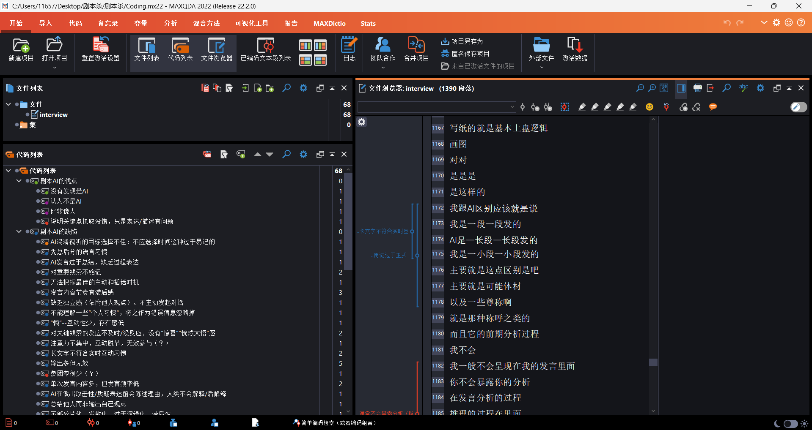
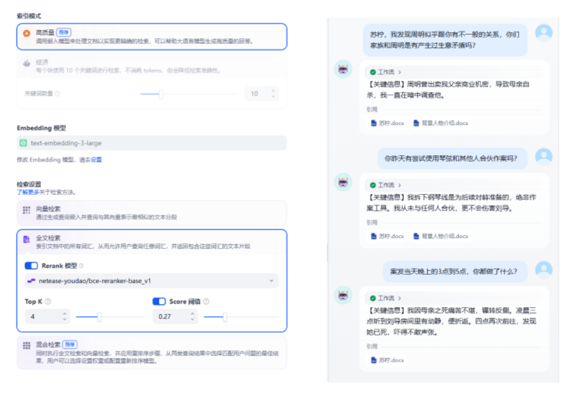

产品 · 02 · 2025 秋社会计算课
Seamless Journey.
一个语言模型混进剧本杀，先不告诉人谁是 AI。要看的不是它会不会演戏，是人在一群人里靠什么把它认出来，以及认不出来的时候，信任怎么建立起来。这是实验，不是上线产品。
终稿题目：Seamless Journey: Explore anthropomorphic design based on LLM’s covert participation in social reasoning game。识破线索的人数和显著性，只以终稿 PDF 里写明的为准。
职责 · 我写了什么
三人：Zhou Xingyu（Shawn）、Li Mingxi（Leonardo）、Yin Yihe（Herman）。组名写「三人成行」。课程页上的分工：Shawn 写引言、相关工作、结果。Yin Yihe 准备游戏本、熟悉 DM、训练预实验用的对话模型，并负责方法的一部分。我写摘要、方法，以及需要补上的其他说明。因此我能讲实验怎么搭、两种条件差在哪、记什么。结果段回到终稿，不凭记忆补。结果不是我执笔。
材料边界 · 百分比只认终稿 PDF
主题编码做于 11 月下旬。没有对着终稿核对之前，不写「我们发现了某百分比」，也不写「人主要靠某一句话识破」。识别线索的具体主题、被试人数、谁被认成 AI、百分比，都在附件和终稿里，不在课程页正文。对方问「人到底靠什么认出来」，应回到终稿编码。对不上就说要回去看原文，不现场凑主题。Tweeting Bot 是另一份联调稿，不拿来顶这一件。
结果边界 · 课程研究，没有一只真机
这也不是家庭机器人。不要写成已在客厅验证过的信任产品。识破线索的主题名称、人数、显著性、谁赢了、模型「比人更能辩」，这些都不在已核对的材料里。终稿 PDF 里没有的，这一页不补。链接：课程过程页 · 中期 Overleaf。

左钻做正确的事，右钻把设计做正确。双钻解析
Diamond 1 · 问题空间隐藏身份只为了测量。先贴标签，测到的是评价。
Diamond 2 · 方案空间先把提示词做扎实。不必先做一套完整游戏软件。
设计思维叠在双钻上：共情与观察在发现，问题定义与 How Might We 在定义，构思与评估在发展，原型、测试、迭代在交付。阶段之间会回跳，不是单向流水线。
Discover · 调研 · 发散
剖析问题：人在社交里认出 AI 时，靠的是什么认知和什么线索。
课程页上先后写过的问题很多。一种条件：不知道谁是 AI，自己推断。另一种：已经知道谁是 AI，再看它的行为和语言哪里异常。后来收成两条：AI 在复杂社交场合里，哪些表现像人；AI 在复杂人际关系里，哪些表现像人。他们标出的缺口是：多人、人际关系复杂、场合复杂、身份不止一层、输出由它自己往下说，而且别人一开始不知道它是 AI。
想贡献的方向，课程页写过：拟人怎么设计、怎样识别强拟人、角色扮演里的 AI、以及怎样防 AI 欺诈。这些是当时列出的可能贡献，不是已经证明的结论。同页写过 “Too many to sort out”。这一阶段禁止评估方案，只把问题摊开。

过程页上的材料。附件内容不在网页正文里。

题是信任和拟人，不是「AI 会不会演戏」。
Define · 整合 · 收敛
洞察收成：隐藏身份只为了测量。一旦先说「这个是 AI」，测到的是人对已知 AI 的评价。
HMW
我们怎样才能在人不被预先告知的情况下，记下他们靠什么起疑？
HMW
我们怎样才能把规则做扎实，而不先把问题做成一套游戏软件？
最终行动方向：两种条件都记文字。一种不知道谁是 AI。另一种已经知道，再看异常线索。规则要能对上研究问题。
Develop · 构思 · 发散后再评估
10 月 3 日已经把解法摊开过。
一种可能是在 Gather.town 上搭，但不真的把游戏做完。另一种是线下或 Zoom。先定规则，不必建游戏。课内预实验：三名研究者自己当参与者，用对话模型组织一局，大约 45 分钟。每人写一份「为什么我觉得另一个人是 AI」。这些文字拿来编码，作为正式找人之前的试水。只记录沟通文字。
看见不藏，就测不到起疑。先说谁是 AI，测到的是评价，不是聊天里怎么起疑。先做一套完整的游戏 App，会把问题带偏。
选了一种条件不知道谁是 AI。另一种已经知道，再看异常线索。两种都记文字。先把提示词做扎实。
放下先做一套完整的游戏 App。这一问的是规则和语言。软件会把问题带偏。
实验可以藏。家里的机器人不行。产品不能学实验这一步。家里的机器人可以被觉得有性格，但不能靠「一直没人怀疑」来维持关系。人已经把它当同伴时，它更应该自己说「我是机器」，而不是再加一句更像人的话。这段是从实验设计推出来的产品判断，不是终稿统计结果。写作和口述都要把两句分开。
Deliver · 实现 · 预实验、编码、终稿
过程按课程页自己的日期走。这些是过程，不是结论。
10 月 17 日中期预稿，题为 Can AI outargue me。10 月底讨论语言模型框架，搭过 Dify，做过 agent 训练，万圣节前后有过预演。11 月 13 日到 14 日招募被试。有过第二轮剧本杀的脚本，做过用户实验，用过 BAPS 量表。11 月 24 日前后有过新游戏形式的实验脚本。11 月 27 日做主题编码。12 月 5 日终期汇报。12 月 16 日终稿。
对方接着会问。为什么要藏：因为不藏就测不到起疑。为什么不做游戏 App：这一问的是规则和语言，先把局玩起来。家庭机器人怎么用：只用后半句，实验可以藏，产品在关系变近时自己拆台。
课程过程页
中期稿
文件柜
上一件 · 鸭
下一件 · Anxious Kit